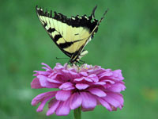

Tips & Tricks

Gardening is a great hobby to take up; it gets you outside, burning calories, and produces rewarding results. Whether you're looking to grow some
delicious produce or beautiful flowers, these 6 tips and tricks for beginners will get you started off on the right foot!
Basis Gardening Tips
- Select plants according to your climate.
- In planning your garden, consider the composition, texture, structure, depth and drainage of your soil.
- Use compost to improve the structure of your soil.
- Choose plant foods based on your garden objectives.
- Generally, plants should receive one inch of water per week.
- Use mulch to conserve water, keeps plants cool, and cut down on weeding.